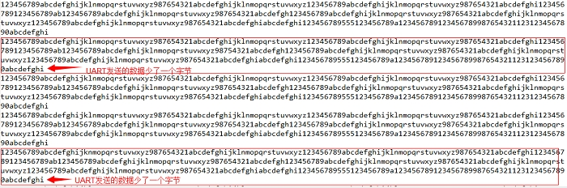

常见问题
24 Dec 2024
环路测试卡死
现象
test_uart uart2
RT_WAITING_SEM
原因
uart 无法接收到数据将一直等待，这时候需要检查硬件并 reset 开发板
压力测试丢包
现象
短时间内进行大量数据的收发，设备接收的数据与发出的数据不一致，出现丢包的现象
例如，定时每 30ms 发送 400 字节的数据：

原因
当其它模块占用 CPU 资源比例较高时，UART 接收数据的速度高于发送的速度，会造成 UART 接收数据的底层的 buffer 数据被覆盖的现象
解决方法
-
将对应的 uart 设置成硬件非自动流控模式或软件流控模式
-
将 uart 获取数据线程的优先级调高